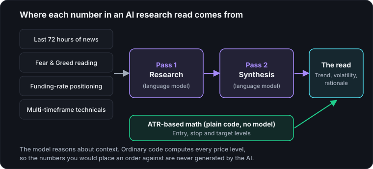

Ask an AI model to "analyze the market" with nothing but its training data and you'll get something that sounds confident and is frequently stale or invented. CryptoBolt's AI research desk is built to avoid that in two ways: a two-pass pipeline, and a hard rule that trade levels are never AI-generated.

Pass one: research
The first pass is a free-text research step. The model is handed live inputs — recent news, the Fear & Greed reading, funding-rate positioning, and multi-timeframe technical data — and asked to reason through what's actually happening, in plain language, before committing to any conclusion.
Pass two: synthesis
The second pass takes that research and structures it into the read you actually see: trend read, volatility context, and a rationale you can follow, returned as structured data so the interface can render it consistently rather than parsing free-form prose.
Why trade levels aren't AI output
Entry, stop, and target levels in CryptoBolt come from deterministic ATR-based volatility math, not from the model. Language models are good at reasoning through context and bad at reliably generating precise numbers — so the numbers you'd actually place an order against are computed the same way every time, and the AI's job stays limited to the read, not the price levels.
What you can check yourself
- Same inputs, same levels. Because the price levels come from ordinary math, they are deterministic: there is nothing for the model to invent.
- Inputs you can see. News, sentiment, funding, and trend are the same kinds of data shown elsewhere in the terminal, so you can compare the read against them.
- "No clean setup" is allowed. A read that says nothing is worth trading is a legitimate result, which a price forecast would never give you.
For the reasoning behind this design, see why CryptoBolt doesn't predict crypto prices. For the wider picture of where AI fits into crypto, see when AI meets crypto.